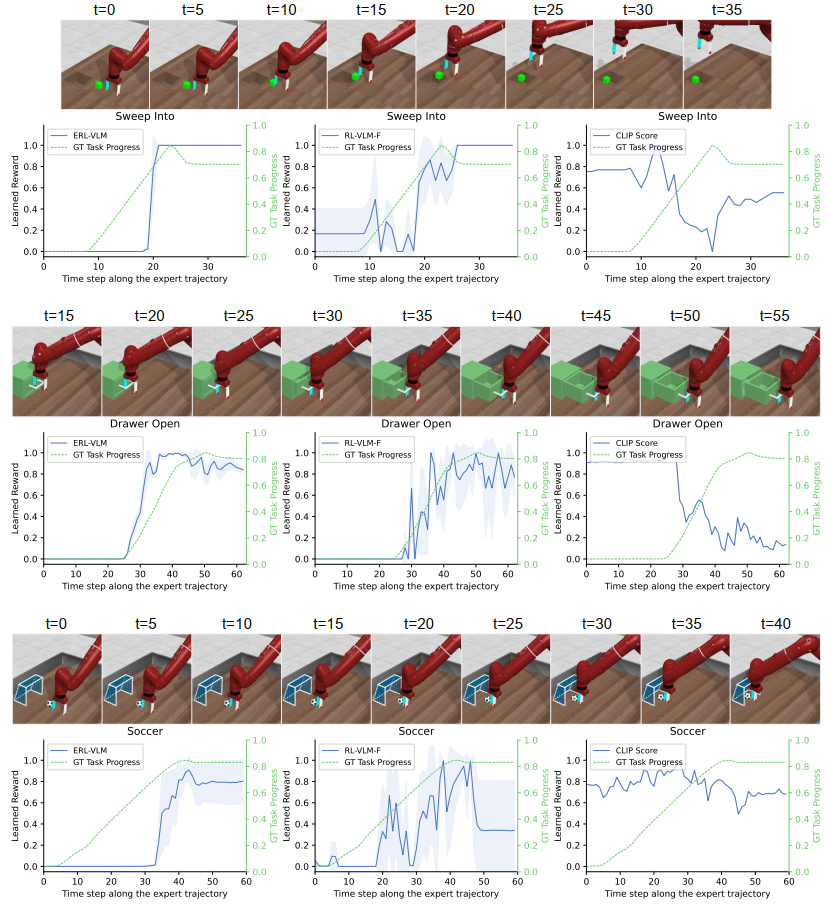
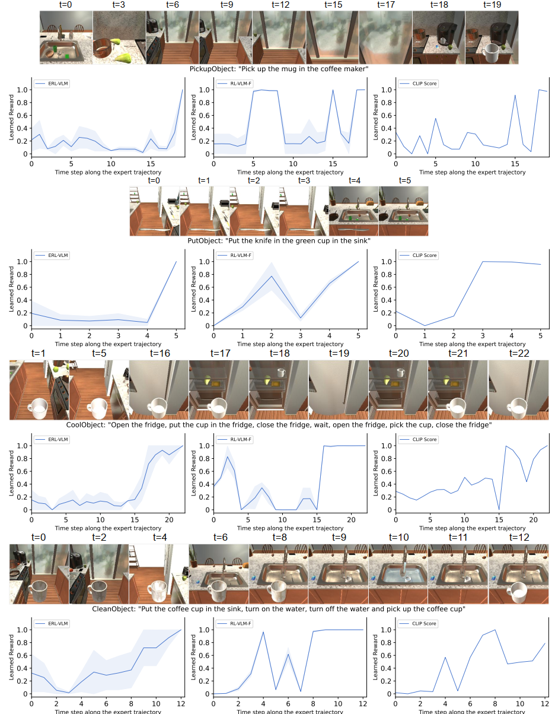

Designing effective reward functions remains a fundamental challenge in RL, as it often requires extensive human effort and domain expertise. While RLHF has been successful in aligning agents with human intent, acquiring high-quality feedback is costly and labor-intensive. Recent advancements in foundation models (LLMs or VLMs) present a promising alternative--leveraging AI-generated feedback to reduce reliance on human supervision in reward learning. Building on this paradigm, we introduce ERL-VLM, a rating-based RL method that effectively learns reward functions from AI feedback. Unlike prior methods that rely on pairwise comparisons, ERL-VLM queries large vision-language models for absolute ratings of individual trajectories, enabling more expressive feedback and improved sample efficiency. We also propose key enhancements to rating-based RL, addressing instability issues caused by data imbalance and noisy labels.
ERL-VLM queries large vision language models (VLMs), such as Gemini and ChatGPT, for rating feedback on individual trajectories in order to learn a reward model. Compared to preference-based feedback, this approach allows VLMs to provide more expressive evaluations, reduces ambiguity in queries, and ensures that all samples are fully utilized during reward learning.
While training the ERL-VLM agent, we sample a state (a single image) or a trajectory (multiple images) from the replay buffer and use it together with a task description to query a large VLM for ratings. The sampled states or trajectories, along with their corresponding ratings, are then stored in the rating dataset. We use rating-based RL to learn the reward model from this dataset, incorporating two improvements: (i) stratified sampling and (ii) mean absolute error loss, to address instability caused by data imbalance and noisy labels from VLMs. The learned reward model is then used to train the agent using off-policy RL algorithms such as SAC or IQL.
In simulated environments, we evaluate ERL-VLM on low-level manipulation control tasks in MetaWorld and high-level vision-language navigation tasks in ALFRED. We compare our method against prior approaches that also use pretrained VLMs to generate rewards based on image observations and text task descriptions.
Note: In MetaWorld, the environment reward is dense, while in ALFRED, the environment reward is sparse.
ERL-VLM outperforms all baselines in 6 out of 7 tasks across two domains. In ALFRED, for the PickupObject and PutObject tasks, ERL-VLM even surpasses the sparse reward function provided by the environment. This indicates that learning a reward function from absolute ratings not only delivers valuable learning signals, akin to sparse rewards, but also provides additional shaping signals that highlight key states essential for task completion.
We provide visualizations of the reward outputs from ERL-VLM, RL-VLM-F, and CLIP along expert trajectories across three MetaWorld tasks and four ALFRED tasks. The learned rewards are averaged over three runs, with shaded regions indicating standard deviation. Images are rendered at corresponding timesteps from the expert trajectories.
MetaWorld
ALFRED
In MetaWorld tasks, CLIP rewards are generally noisy and poorly aligned with task progress. While both ERL-VLM and RL-VLM-F exhibit increasing reward trends along expert trajectories, ERL-VLM aligns more closely with the ground-truth task progress and shows significantly less noise compared to RL-VLM-F. In ALFRED, ERL-VLM produces smoother and more consistent reward signals along expert trajectories than the other methods.
The rollouts from our method and the baselines in the MetaWorld and ALFRED domains are shown below. For each task, we provide a text description of the task goal used by ERL-VLM. This description is combined with a predefined prompt template to form the complete input used to query the VLM for ratings.
Sweep Into
Task description: "place the green cube so that it lies on the square hole"Drawer Open
Task description: "open the drawer"Soccer
Task description: "place the soccer ball so that it lies inside the goal"PickupObject
Task description: "Pick up the mug in the coffee maker"Task description: "Pick up the white coffee cup to the right of the trophy"Task description: "Put the knife in the green cup in the sink"CoolObject
Task description: "Open the fridge, put the cup in the fridge, close the fridge, wait, open the fridge, pick the cup, close the fridge"CleanObject
Task description: "Put the coffee cup in the sink, turn on the water, turn off the water and pick up the coffee cup"Sweep Bowl
Pickup Banana
Drawer Open
@InProceedings{
luu2025erlvlm,
title={Enhancing Rating-Based Reinforcement Learning to Effectively Leverage Feedback from Large Vision-Language Models},
author={Tung Minh Luu , Younghwan Lee, Donghoon Lee, Sunho Kim, Min Jun Kim, Chang D. Yoo},
booktitle={Proceedings of the 42th International Conference on Machine Learning},
year={2025}
}